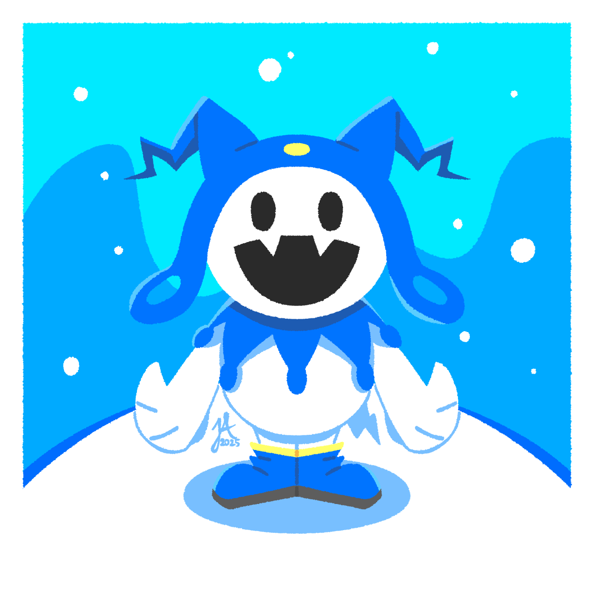

resize the browser or phone viewport to watch the layout shift.

manifesto idea: noise and distortion; css idea: filter and scale; relationship: the image is pushed into harsh contrast and reduced to a small object.
manifesto idea: replication and repetition; css idea: background repeat and tile sizing; relationship: the image becomes a texture field instead of a single picture.
manifesto idea: fragmentation and broken reading; css idea: grid, offset cells, and rotation; relationship: the image is sliced into a rough sequence of pieces.
manifesto idea: the partial image; css idea: overflow hidden with object-fit; relationship: only a narrow window of the source stays visible.
manifesto idea: unstable identity; css idea: opacity, filter, and mix-blend-mode; relationship: two copies interfere until the image feels doubled and unresolved.